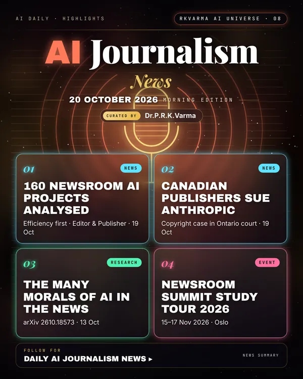

Latest updates · 20 October 2026
In the full issue →Three years into newsroom AI, a study of 160 projects finds most outlets use it to speed existing work, while Canada's biggest publishers have sued Anthropic in Ontario.
Research, industry & policy
- After 3 years of AI in newsrooms, what has changed?, Editor & Publisher · 19 Oct 2026: An analysis of 160 newsroom AI projects finds the industry focused more on efficiency than on new forms of journalism.
- News publishers sue Anthropic in Ontario, The Canadian Press · 19 Oct 2026: A coalition including Canada's largest newspapers has filed a copyright suit against the AI company in an Ontario court.
Journals & preprints
- The Many Morals of AI: The cautionary bias of North American news narratives in global perspective, arXiv 2610.18573 · 13 Oct 2026: The stories told about artificial intelligence (AI) play a central role in shaping public understanding, policy debates, and expectations about technological change.
Conferences, workshops & events
- Newsroom Summit Study Tour 2026, 15–17 Nov 2026 · Oslo: Visits to leading Norwegian newsrooms before the summit.
- Newsroom Summit 2026, 18–19 Nov 2026 · Oslo: Newsroom leaders on AI adoption and newsroom culture.
Why it matters
Newsrooms are using AI to save time while their owners fight over how AI firms use their journalism; licensing and litigation now run side by side.

